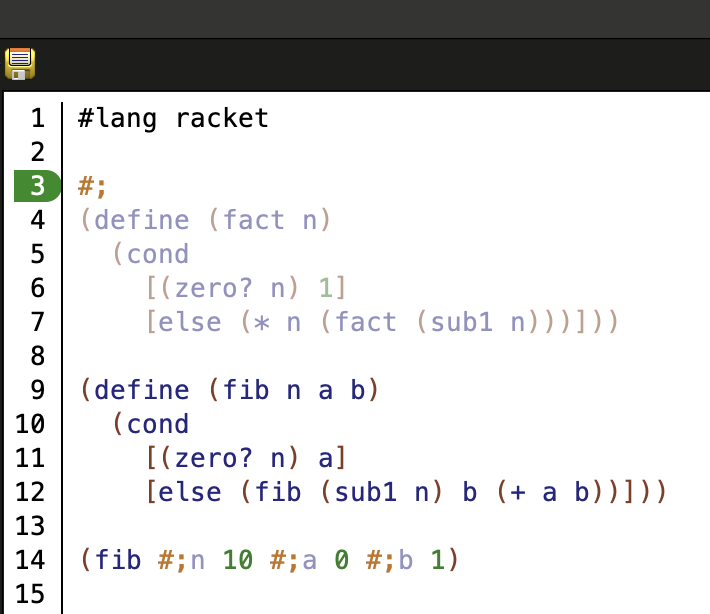
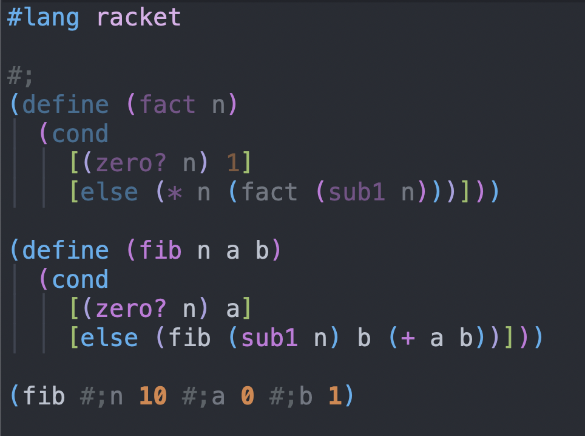

4 选择正确的结构
Racket 为相同或类似的目的提供了一系列的结构体。 虽然 Racket 的设计者们认为没有一种正确的方法可以适用于所有的事情,但为了一致性和可读性,我们在某些情况下更喜欢某些构造。
4.1 注释
按照 Lisp 和 Scheme 的传统,我们用一个分号来表示行内注释(到行尾),用两个分号来表示开始一行的注释。 把第二个分号看作是一个强调性的观点。
经验丰富的谋士,不一定是 Racketeers,也使用三倍和四倍的分号。 这被认为是一种礼貌,用来区分文件头和章节头。
除了 ; 之外,我们还有另外两种注释代码的机制:
#|...|# 用于注释代码块, #; 用于注释表达式。
Block comments 是针对那些罕见的情况,即整个定义和/或表达式的区块必须一次性注释掉。
Expression comments—
下面的截图说明了 #; 的使用,以及 DrRacket 和 Emacs(Racket 模式)如何默认为这类注释着色。


4.2 定义
Racket 提供了很多定义结构,包括 let, let*, letrec 和 define 。 除了最后一个,定义结构会增加缩进的程度。 因此,在可行的情况下,请选择 define 。
|
|
|
|
4.3 条件
和定义结构一样,条件式也有很多种类。 因为 cond 和它的亲戚 (case,match 等等) 现在允许局部使用 define, 你应该更喜欢它们而不是 if 。
|
|
另外,使用 cond 而不是 if 来消除显式 begin 。
上面的 “good” 例子用 match 会更好。 一般来说,使用 match 来解除复杂数据的结构。
你还应该偏爱 cond (和它的亲属)而不是 if 来匹配数据定义的形状。 特别是,上面的例子可以用 and 和 or 来表述,但这样做就不能很好地体现递归的特点。
4.4 表达式
不要把表达式嵌套得太深。 相反,要为中间结果命名。 有了精心选择的名字,你的表达式就变得容易阅读了。
|
|
4.5 结构与列表
当你表示少量固定数量的值的组合时,使用 struct 。 对于固定长度(长)的列表,请添加注释甚至合同,说明约束条件。
如果一个函数通过 values 返回几个结果,当你处理四个或更多的值时, 考虑使用 struct 或列表。
4.6 Lambda 与定义
虽然没有人否认 lambda 很可爱,但 define 函数的名字会告诉你它们计算的内容,并有助于加速阅读。
|
|
|
|
当然,许多结构体(如 call-with-values) 或高阶函数(如 filter) 是为短 lambda 而生的; 在这种情况下,不要犹豫地使用 lambda 。
4.7 特征功能
特征函数是 values:
4.8 追踪
随着 for/fold, for/list, for/vector 和朋友们的出现, 用 for 循环编程已经变得和用 map 和 foldr 编程一样实用。 有了 for* 循环、过滤器和迭代规范中的终止条款,这些循环也比显式的遍历组合器要简洁得多。 而且有了 for 循环,你可以将遍历与列表解耦。
|
|
注意 对用户定义的序列进行 for 遍历往往很慢。 如果在这些情况下性能很重要,你可能希望回到你自己的遍历函数。
4.9 函数与宏
在可能的情况下定义函数,或者,当函数可以使用时,不要引入宏。
|
|
4.10 异常
当你处理异常时,要尽可能准确地指定异常。
|
|
|
|
|
4.11 参数
如果你需要设置一个参数,请使用 parameterize:
|
|
正如比较所展示的, parameterize 清楚地限定了变化的范围,这对读者来说是一个重要的想法。 此外, parameterize 可以确保你的代码更有可能与连续和线程一起工作,这对 Racket 程序员来说是一个重要的想法。
4.12 复数
在命名集合和库的时候避免使用复数。 使用 racket/contract 和 data/heap, 而不是 racket/contracts 或 data/heaps 。